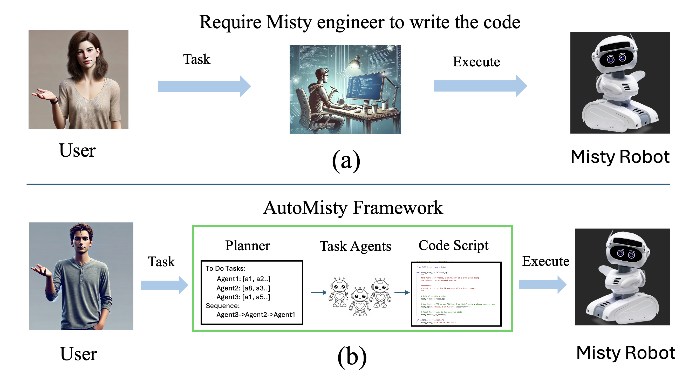

Selected Publications

AutoMisty: A Multi-Agent LLM Framework for Automated Code Generation in Misty Robot
Lu Dong*, Xiao Wang*, Sahana Rangasrinivasan, Ifeoma Nwogu, et al.
International Conference on Intelligent Robots and Systems (IROS), 2025 (under review)

Word-Conditioned 3D American Sign Language Motion Generation
Lu Dong, Xiao Wang, Ifeoma Nwogu
EMNLP 2024 (Findings of ACL)

Ig3D: Integrating 3D Face Representations in Facial Expression Inference
Lu Dong*, Xiao Wang*, et al.
ECCV 2024 Workshop

Open Domain Text-Driven Multi-Person Motion Synthesis
Lu Dong, Mengyi Shan, Yutao Han, et al.
ECCV 2024
SignAvatar: 3D Motion Reconstruction for Sign Language
Lu Dong, Fei Xu, Xiao Wang, Ifeoma Nwogu, et al.
IEEE FG 2024

General Melodic Characteristics of XinTianYou Folk Songs
Juan Li, Lu Dong, Jianhang Ding, Xinyu Yang
Sound and Music Computing (SMC), 2023